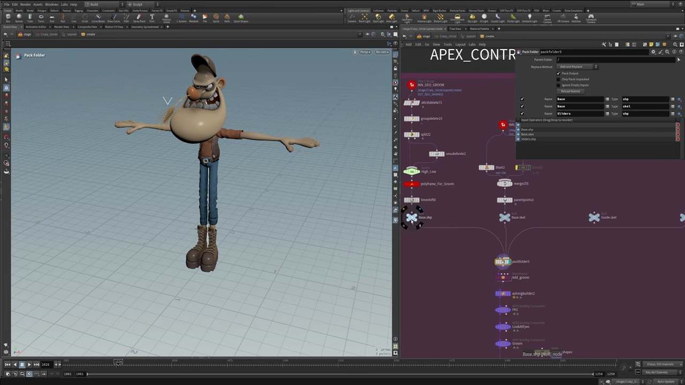
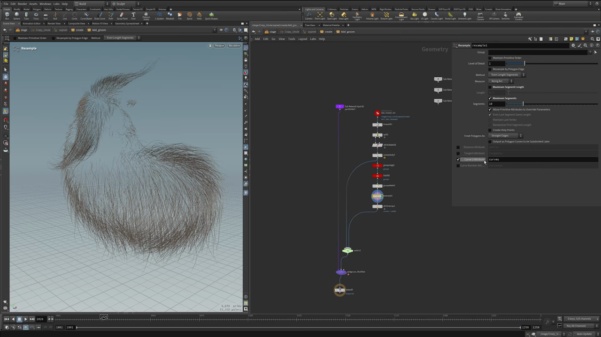
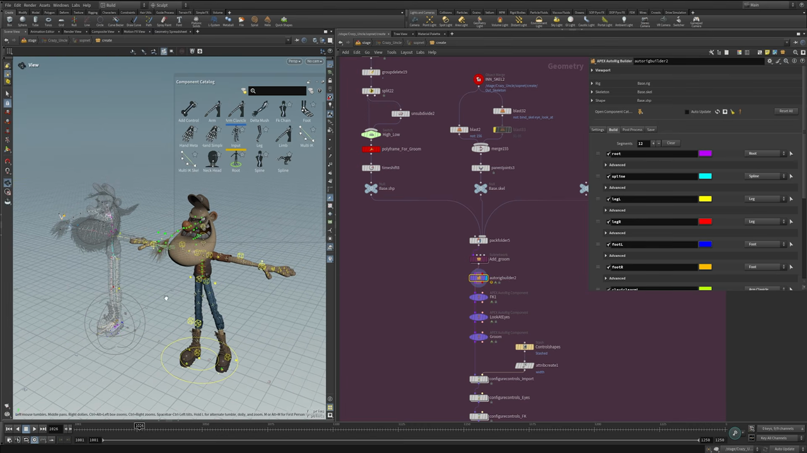
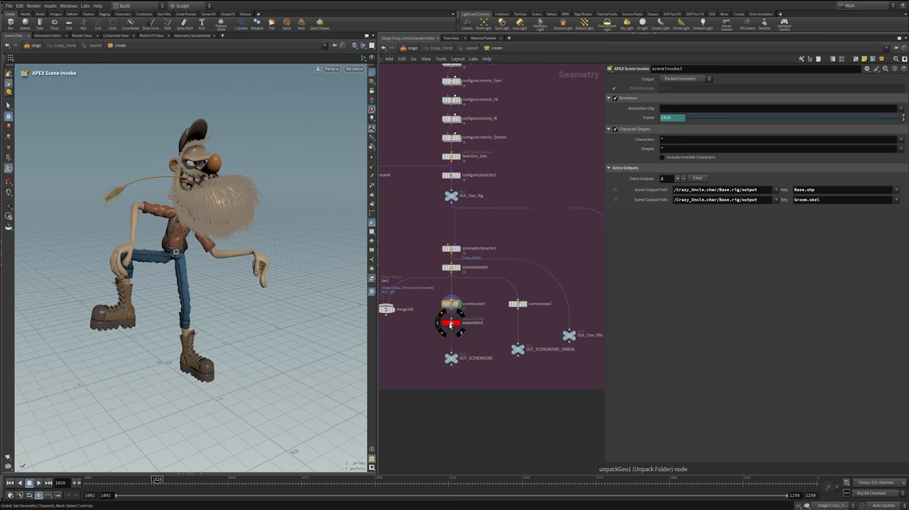

Houdini キャラクター制作 7 — APEX AutoRig Builder でコントロールリグを組む
出典: Character Creation 7 | Control Rig Using APEX （SideFX 公式チュートリアル Create a Procedural Character の第7回 / 講師 Roy Kristoffersen さん / Houdini 21 / 14:26 / 英語）。 このページは、上記の動画を見ながら自分用にまとめた日本語の学習メモです。SideFX 公式の翻訳ではありません。 シリーズ全体は第0回にまとめています。
この回で扱うこと
いよいよ APEX でコントロールリグを組みます。 この回は元動画にチャプターが付いているので、それに沿ってまとめます。
| 時間 | チャプター |
|---|---|
| 00:26 | Setup |
| 02:10 | Pack Folders |
| 03:45 | Sub Network（groom の準備） |
| 05:55 | Autorig Builder |
| 10:15 | Rig Path |
| 12:09 | Auto Rig Builder の実演 |
| 13:36 | Testing |
1. Setup — アニメーション用の軽いメッシュを用意する
読み込むのは細かくサブディバイドされたメッシュです。そのままではアニメーション作業に重すぎるので、 軽い版を用意します。
Object Merge→Attribute Delete→Group DeleteSplitでヒゲを外します。ヒゲはあとで groom として別に足すためですUnsubdivideでポリゴンを減らしますSwitch（ネットワーク上の名前はHigh_Low）で高解像度と低解像度を切り替えられるようにします
このUnsubdivideの効果が具体的な数字で語られていました。 30万プリミティブが8万プリミティブになります。 アニメーションシーンで動かすものとしては、この差はかなり大きいと思います。Switchを 1 にすると低解像度、0 にすると高解像度です。
忘れると groom が動かない設定
PolyFrame をかけて、全プリミティブに normal と tangentu を付ける必要があります。
ネットワーク上でもノード名が polyframe_For_Groom になっていて、
これが無いと後段の Add Groom が機能しません。
そのあと Time Shift を通します。スケルトン側は Blast で整理して root にまとめ、
Merge してから Parent Joints で親子付けします。
2. Pack Folders — これが無いと APEX は動かない

Pack Folder で、シェイプとスケルトンを決まった名前で詰めます。
講師の方は「これが無いと APEX システムは動かない」とはっきり言っていました。
| Name | Type | 中身 |
|---|---|---|
Base | shp | ベースのシェイプ（メッシュ） |
Base | skel | スケルトン |
Sliders | shp | ブレンドシェイプ用のスライダー（第4回で作ったもの） |
この Base.shp / Base.skel / Sliders.shp という名前が、
そのまま APEX 側から参照されます。
3. Sub Network — groom を軽くして持ち込む

ヒゲと髪をアニメーション用のリグに載せるためのサブネットワークです。 そのままでは重すぎるので、ここでも減らします。
Time Shift→Splitで髪だけにしますAttribute Deleteで掃除しますConnectivityでカーブごとに番号を振りますGroup by Rangeで 40本のうち39本を選びますBlastでそれを消します。つまり40本に1本だけ残しますGroup Delete→Resampleで点数を減らします
Resample の前後で 10万点が6.2万点になります。
それでも見た目は十分に使える、とのことでした。
curveu を width にする
本数を40分の1に減らすと、当然スカスカに見えます。それを太さで補います。
Resampleの Curve U Attribute を有効にしてcurveuを作ります（上の画像）Attribute Remapでcurveuをwidthにリマップします
width アトリビュートがあると、Houdini はカーブをその太さで描画します。
本数を大幅に減らしても、ビューポート上ではちゃんとヒゲらしく見えます。
太さはパラメータで調整できます。
最後に Switch（メッシュ側の High/Low と連動）を通して、
Add Groom ノードに渡します。このノードは groom shape と groom skeleton を出力します。
動画では「なぜかこの時点では表示されないが、そういうもの。 最後に Scene Animate を足せば見えるようになる」と補足されていました。
4. APEX AutoRig Builder

APEX AutoRig Builder でリグのコンポーネントを組み立てます。
パラメータの上部で Rig に Base.rig、Skeleton に Base.skel、Shape に Base.shp を指定します。
Component Catalog
ビューポートに出ている Component Catalog から部品を選んで足していきます。 用意されているコンポーネントはこれだけありました。
Add Control / Arm / Arm Clavicle / Delta Mush /
Fk Chain / Foot / Hand Meta / Hand Simple /
Input / Leg / Limb / Multi IK /
Multi IK Skel / Neck Head / Root / Spine
Build タブに追加したコンポーネントが並びます。動画の実演では spine → leg（左右）→ arm with clavicle → foot（左右）→ head → meta arms の順に足していました。各コンポーネントには色が割り当てられていて、 ビューポート上のコントローラーもその色で表示されます。
足りないところを補う
Auto Rig Builder だけでは足りない部分を、APEX AutoRig Component ノードで補っています。
| ノード | やっていること |
|---|---|
FK | 目の Look At が promote されていなかったので、joint group を使って transform / rotation / scale を promote しています |
LookAtEyes | 目がコントローラーを追いかけるようにします |
Groom | groom を見た目として追加します |
コントロールシェイプを整える
そのあと Configure Controls がいくつも並んでいて、
部位ごとにコントローラーの見た目を調整しています
（configurecontrols_Import / _Eyes / _FK / _IK / _Quirks）。
- カスタムのコントロールシェイプを読み込み、
Attribute Createでwidthを設定しています - Shape Override で、アニメーターが選びにくい形のコントローラーを扱いやすい形に差し替えます
動画では head のコントローラーで Shape Override をオフにして、 「これではアニメーターが掴みにくい」と実際に見せてから、 扱いやすい形に差し替えていました。 下流に行くほどリグが整理されて、見た目がすっきりしていきます。
5. Rig Path とキャラクターの確定
Configure Character で Rig Path に Base Rig を指定します。
ここがragdoll・ミラーリング・モーションミックスなどを足す場所でもある、
と説明されていました。今回のキャラクターでは使っていません。
名前（Crazy_Uncle）を付けて OUT_Char_Rig に出し、
Scene Add Character → Scene Animate でポーズを付けられる状態になります。
この状態でのフレームレートはかなり良好でした。
6. Solaris へ渡す

最後に APEX Scene Invoke でシーンに展開します。
Output は Packed Geometry、Extra Outputs に Base.shp と Groom.skel を
指定していました。
ここで Unpack Folder によるアンパックが必要です。
これをやらないと、マテリアルまわりがうまく動かない、とのことでした。
出力は3系統に分かれています。
| 出力 | 行き先 |
|---|---|
OUT_SCENEINVOKE | Solaris へ（第8回のライティングとレンダリング） |
OUT_SCENEINVOKE_UNREAL | Unreal 連携用（第9回） |
OUT_Char_FBX | FBX 書き出し用 |
ここがリグとして配布する地点でもあります。書き出したリグを読み込んで、 テストアニメーションを付けて動作を確認する、という流れが紹介されていました。
7. Testing
Auto Rig Builder の良いところとして挙げられていたのが、 組みながら横でリグをテストできる点でした。 コンポーネントを足すたびに結果がすぐ見えるので、 おかしいところや足りないところがその場でわかります。
この回のまとめ
Unsubdivideでアニメーション用の軽いメッシュを用意します（30万→8万プリミティブ）PolyFrameで normal とtangentuを付けないと Add Groom が動きませんPack FolderでBase.shp/Base.skel/Sliders.shpを詰めます。これが APEX の前提です- groom は
Group by Range+Blastで40本に1本まで間引き、curveu→widthで太さを補います APEX AutoRig Builderの Component Catalog から部品を選んで組み立てます- 足りない部分は APEX AutoRig Component（FK / LookAtEyes / Groom）で補います
APEX Scene InvokeのあとUnpack Folderでアンパックしないと、マテリアルが正しく動きません
次の第8回は Lighting and Rendering in Karma です。